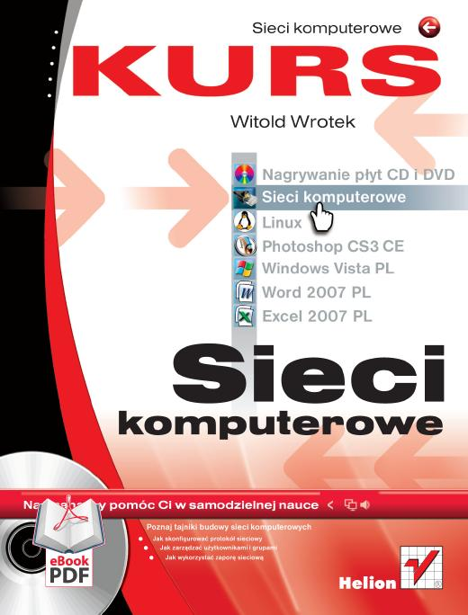
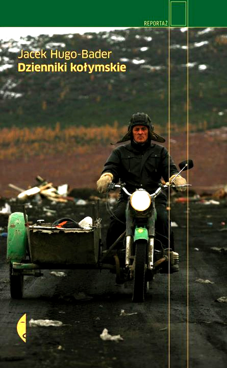

<!-- Poziom nagłówka tabeli -->
<div id="agnieszka" class="nondisplay">
<div id="lovely-things-list-aga">

<div class="row">
	<div class="span7 offset5"><p id="ostatnie">Ostatnie książki przeczytane przez <span class="imie">Agę</span>:</p> <input type="search" class="search" placeholder="szukaj" /> 
		<!-- <ul class="filter">
      	<a href="#" rel='tooltip' title='Wyświetl wszystkie książki'><li class="btn" id="filter-none-2"><i class="icon-th-list"></i></li></a>
        <a href="#" rel='tooltip' title='Wyświetl tylko polecane książki'><li class="btn" id="filter-beverages-2"><i class="icon-heart"></i></li></a>
    </ul> -->
  </div>
</div>

<!-- Poziom tabeli i sylwetki -->
<div class="row"> 
	<div class="span5" id="containtersylwetka">
		<h1>Agnieszka</h1>
		<p class="wzrost">158 cm</p>
		<aside class="sylwetkainfo">zastępca <br>dyktatora</aside>
		<div class="progress progress-info progress-striped active">
			<div class="bar" style="width: 4%;"></div>
			
		</div>
		<p><span class="label label-info">4%</span> przeczytane</p>
		<p>czyli ok. <span class="label label-info">838 stron</span></p>
		<p>książki utworzyłyby wieżę <br>o wysokości <span class="label label-info">5,7 cm</span></p>
		<div id="cosadzisz">
				<a data-toggle="modal" href="#skomentuj"><div class="alert alert-info">
				<h4 class="alert-heading">Co sądzisz o naszym wyzwaniu?</h4>
				Dopisz się i zobacz, co napisali inni. &raquo;
			</div></a>
		</div>	
	</div>
	
	<div class="span7" id="lista">
        
        <ul class="list unstyled">
          <li>
					
					<p class="author">Witold Wrotek</p>
					<p class="name"><a href="#" title="Sieci komputerowe. Kurs" rel="tooltip" class="niewidaclinku">Sieci komputerowe...</a></p>
					<h6><span class="category">360 stron</span> • <span class="height">2,6 cm
					grubości</span></h6>
					<p class="recommend"></p>
					<p class="desc">
					<span class="readwhen label label-success">Informatyka</span>
					<span class="description">Jeżeli w Twoim akademiku / miejscu pracy  /na Twojej
					uczelni sieć komputerowa działa z prędkością 1 kilobita na sekundę
					(no, chyba że akurat ma 76. awarię w tym miesiącu), to już wiesz, że komuś zabrakło
					lekury książki Wrotka. Dla dobra swojego i publicznego -
					kupcie <i>Sieci komputerowe. Kurs</i> i dajcie administratorom swoich sieci. A potem
					przepytajcie. Wielokrotnie.
					</span>
					</p>
					</li>
					<li>
					
					<p class="author">Joanna Wrycza-Bekier</p>
					<p class="name"><a href="#" title='Webwriting. Profesjonalne tworzenie tekstów do internetu' rel="tooltip" class="niewidaclinku">Webwriting...</a></p>
					<h6><span class="category">158 stron</span> • <span class="height">0,6 cm
					grubości</span></h6>
					<p class="recommend"></p>
					<p class="desc">
					<span class="readwhen label label-success">Webwriting</span>
					<span class="description">Jak zatytułujesz swojego maila z reklamą, żeby
					odbiorca nie przeniósł go do spamu bez czytania?
					Gdzie umieścisz na stronie najważniejsze informacje, żeby nie przemieszały się z
					pobocznymi ramkami?
					Jaka jest najważniejsza część mowy dla tekstów internetowych?
					Jak żyć, żeby być szczęśliwym?
					I dlaczego na świecie jest tyle zła i agresji?
					Ta książka nie jest w stanie odpowiedzieć na wszystkie pytania, ale z pierwszymi trzema sobie poradzi.
					</span>
					</p>
					</li>
					<li>
					
					<p class="author">Jacek Hugo-Bader</p>
					<p class="name">Dzienniki kołymskie</p>
					<h6><span class="category">320 stron</span> • <span class="height">2,5 cm
					grubości</span></h6>
					<p class="recommend"></p>
					<p class="desc">
					<span class="readwhen label label-success">reportaż</span>
					<span class="description">Już rok przed powstaniem książki jakucka szamanka
					Edij Dora wiedziała,
					jak będą wyglądać <i>Dzienniki kołymskie</i>, oczyściła je również z wszystkich ludzi,
					którzy po ich przeczytaniu
					mieliby nie odczuć satysfakcji. Chyba nie masz już wątpliwości, że warto przebyć z
					autorem 2025 kilometrów wzdłuż Traktu Kołymskiego?
					</span>
					</p>
					</li>

        </ul>
			</div>
    </div>		
</div>
</div>